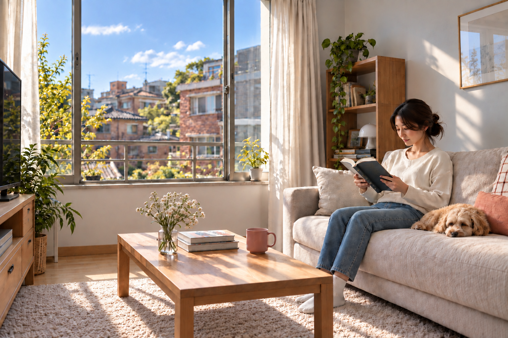

IN CARE DESIGN STUDY · ISSUE 01
이미지를
만드는
두 가지 길
한 장을 빨리 완성하는 방법과, 한 공간을 여러 번 정확하게 사용하는 방법은 서로 다릅니다.

IN CARE DESIGN STUDY · ISSUE 01
한 장을 빨리 완성하는 방법과, 한 공간을 여러 번 정확하게 사용하는 방법은 서로 다릅니다.
OPENING ESSAY
생성형 이미지는 빛과 분위기를 놀랍도록 빠르게 만듭니다. 하지만 테이블, 창문, 책장이 같은 공간에 놓여 있는지는 별개의 문제입니다.
처음에는 문장으로 원하는 장면을 설명했습니다. “따뜻한 거실, 35mm 렌즈, 정확한 투시.” 결과는 자연스러웠지만 선을 길게 연장해보면 테이블과 TV장이 서로 다른 방향을 바라봤습니다. 사람의 눈은 얼굴과 빛을 먼저 보기에 오류를 늦게 발견합니다.
그래서 제작을 두 갈래로 나눴습니다. 첫 번째는 프롬프트로 완성 이미지를 빠르게 만드는 길입니다. 두 번째는 카메라와 공간을 먼저 세우고 그 위에 사람과 빛을 얹는 길입니다.
“정교함은 더 긴 프롬프트가 아니라, 틀린 단계에서 멈출 수 있는 과정에서 나옵니다.”
원본과 문장을 함께 넣고 완성 이미지를 바로 만듭니다. 한두 장의 콘셉트와 분위기 탐색에 빠릅니다.
35mm 카메라와 방·가구의 위치를 먼저 계산합니다. 이후 생성형 모델은 재질과 인물, 빛을 맡습니다.
THE NINE STAGES
각 단계는 하나의 질문만 해결합니다. 앞 단계가 틀리면 뒤 단계로 넘어가지 않습니다.
무엇을 어디에 보여줄지 정합니다.
높이·35mm·방향을 수치로 고정합니다.
방과 가구를 단순한 상자로 세웁니다.
사람·책·강아지의 접촉을 맞춥니다.
창의 빛과 그림자 방향을 정합니다.
기하를 유지하며 재질을 입힙니다.
Sony·Canon 표현을 나눕니다.
화이트밸런스와 톤을 다듬습니다.
투시·인물·색을 다시 검사합니다.
−3.5, −5.5, 1.5 m0, 2.0, 1.1 m3971.74, 439.8370.30, 439.83WORKING FILES
이번 거실 장면의 실제 중간 산출물입니다. 왼쪽 위부터 순서대로 읽습니다.
CASE STUDY
왼쪽은 최초 이미지입니다. 오른쪽은 공통 장면을 먼저 만든 뒤 Sony 35mm 해석을 적용한 하네스 후보입니다.

COST & TIME
정교한 방식은 첫 장에 공간과 카메라를 만드는 시간이 듭니다. 하지만 그 자산을 다시 쓸 수 있어 두 번째 앵글부터 비용이 내려갑니다.
| 제작 방식 | 첫 장 | 추가 한 장 | 잘 맞는 상황 | 주의점 |
|---|---|---|---|---|
| 01 단일 생성 | 1× | 1× | 아이디어 스케치 | 공간 일관성이 낮음 |
| 01 반복 수정 | 2–5× | 1–3× | 한 장의 분위기 개선 | 실패 원인을 추적하기 어려움 |
| 02 하네스 | 4–8× | 0.4–1× | 카메라·색 A/B 비교 | 단계별 검증 필요 |
| 02 3D+합성 | 6–12× | 0.2–0.7× | 여러 앵글·건축·가구 | 초기 모델 구축 필요 |
상대 계획값입니다. 실제 토큰 수나 시간은 모델·해상도·서비스 상태에 따라 달라집니다.
QUALITY GATES
자동 측정과 사람의 검토가 모두 끝나야 다음 단계로 넘어갑니다.
같은 방향의 선이 하나의 소실점 군집으로 모이는가?
창틀·책장·테이블 다리가 같은 카메라를 따르는가?
발과 가구 다리가 바닥과 좌판에 실제로 닿는가?
사진화 과정에서 승인된 꼭짓점이 움직이지 않았는가?
프록시는 통과했지만 사진화 결과는 테이블 선이 이동했습니다.
3D SPACE WORKFLOW
3D 마스터가 있으면 방과 가구를 다시 상상할 필요가 없습니다. 카메라 높이·방향·렌즈만 바꿉니다.
MOVE
왼쪽·오른쪽·낮은 시점·높은 시점으로 이동합니다.
LENS
공간은 그대로 두고 화각과 원근만 바꿉니다.
LIGHT
가구 위치를 건드리지 않고 조명 rig만 교체합니다.
COLOR
같은 렌더에서 색·미세 대비·하이라이트만 분기합니다.
HOW TO CHOOSE
좋은 방식은 하나가 아닙니다. 최종 이미지 수와 정확도 요구가 선택을 결정합니다.
CHOOSE 01
한두 장의 아이디어, 분위기 탐색, 촉박한 납기, 건축 직선이 중요하지 않은 장면.
CHOOSE 02
가구·공간의 정확성, 세 개 이상의 앵글, 렌즈 비교, 캠페인용 반복 제작.
CONTENT SUMMARY